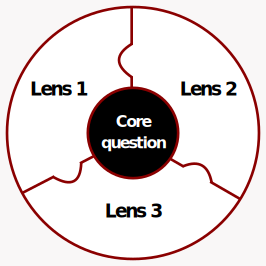
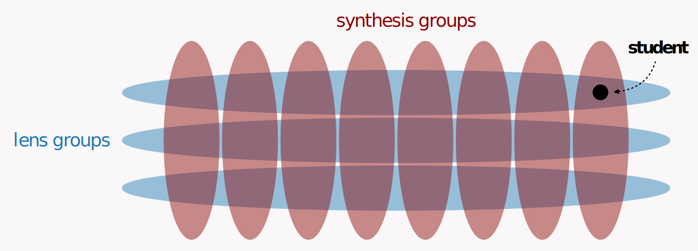
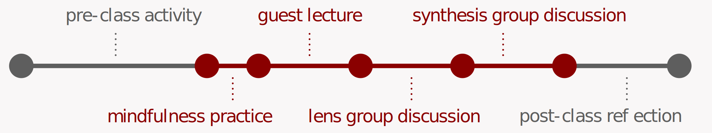

Learning objectives
Although this course covers a fair amount of theory, we define its learning objectives to be skill-focused. This decision is based on the perspective that while theory is a valuable foundation, what is most important is whether the course enables students to take actions that promote the well-being and inclusion of themselves and others.
Learning Objectives
This course aims to increase students’ abilities to:
- Bravely, knowledgeably, openly, and inclusively discuss JEDI-related topics.
- Name central JEDI concepts occurring in day-to-day interactions.
- Self-advocate and practice self-care in the academic context.
- Practice allyship to others in the academic context.
- Apply evidence-based JEDI-promoting practices in research, teaching, and academic leadership positions.
- Identify JEDI topics of interest and continue learning independently.
Course structure
The Jigsaw Method
The course is structured around the Jigsaw Method, a cooperative learning method that research has shown to strengthen community among students. The high-level approach is to assign different subgroups of the class a different piece of an assignment, and then have them synthesize their work across pieces. We implement this method via core questions and lenses, and by grouping students into lens groups and synthesis groups, as defined below.
Core Questions and Lenses. In our class, the central assignment on which students collaborate is answering the core question—a concrete, but conceptually vast question—and the “pieces” of the assignment are lenses—angles through which one can approach that question. Here is a visual representation of how lenses can be seen as the pieces of the “Jigsaw”, and how they provide differing ways to approach the central core question:

Lens Groups and Synthesis Groups. To carry out the Jigsaw method, students are grouped in two different ways: into lens groups, and into synthesis groups. The students in a given lens group are assigned the same lens, for within-lens knowledge sharing; the students a given synthesis group are assigned different lenses, for cross-lens knowledge sharing. Synthesis groups are the same each week; lens groups are by default the same each week, but students are permitted to trade on a week-to-week basis. During class, students will first meet with their lens group, and then their synthesis group, as described below.

Weekly Structure
A typical week of the course has the following schedule, where gray is out-of-class time and red is in-class time:

pre-class activity
Pre-class activities are completed individually. Their purpose is to help students prepare to contribute to in-class discussion by guiding them through the process of researching the core question through their assigned lens. In doing a pre-class activity, a student chooses from among a set of suggested resources for their lens, studies those resources to develop their own understanding of that lens (and how it relates to the core question), and then writes up some ideas they feel will be helpful to share during in-class discussion. These activities are expected to take approximately 60 minutes (but offer essentially limitless opportunities for digging deeper). Pre-class activities are due the day before class.
mindfulness practice
We begin class with 5 minutes of mindfulness practice via the Headspace App. This exercise is dual-purpose: it gives students a few quiet moments to relax and let go of external distractions, and it also exposes them to mindfulness as a well-being tool that they can use throughout grad school (CMU PhD students are given access to the Headspace app). For more information on how mindfulness practice has been shown benefit students’ well-being, see, e.g., research by the University of Wisconsin Center for Healthy Minds.
guest lecture
For 30 minutes of class, students hear from a guest lecturer who is a domain expert on an aspect of the current week’s topic. This guest lecture serves as the main source, other than the resources in the pre-class activities, through which students receive expert information.
lens group discussion
Students participate in a moderated, free-form discussion with all other students who were assigned the same lens. Generally, there are three lenses, and the three corresponding moderators are the two student instructors and the guest-lecturer. In this discussion, students pool their ideas, evidence, and perspectives on their common lens, and have the chance to ask questions that came up for them in their research.
synthesis group discussion
Students then bring the information they have gathered about their lens to their synthesis group. To synthesize information across their lenses, each synthesis group works together to do their choice of many possible synthesis activities, as listed in the Discussion Guide (linked on the “Home” page). At the end of class, synthesis group share some quick takeaways from their activity with the class.
post-class reflection
After class, students complete a post-class reflection. This reflection is designed to help them address any lingering questions or ideas that they came across during the current week. These reflections are designed to take approximately 30 minutes and can take many forms (choices are provided in the Post-Class Reflection instructions, linked on the “Home” page). All formats require a short submission summarizing takeaways from the student’s chosen reflection activity.
Main Curriculum Contributors
Abhinav Adduri, Valerie Chen, Judeth Choi, Bailey Flanigan, Paul Gölz, Anson Kahng, Pallavi Koppol, Ananya Joshi, Tabitha Lee, Sara McAllister, Sam Reig, Ziv Scully, Catalina Vajiac, Alex Wang, Josh Williams, Liv Zane, with expert consulting from Dr. Alexis Adams from the CMU Eberly Center for Teaching and Learning.
 This work is licensed under a Creative Commons Attribution-NonCommercial 4.0 International License.
This work is licensed under a Creative Commons Attribution-NonCommercial 4.0 International License.
Website contributors: Alex Wang, Bailey Flanigan, Paul Gölz